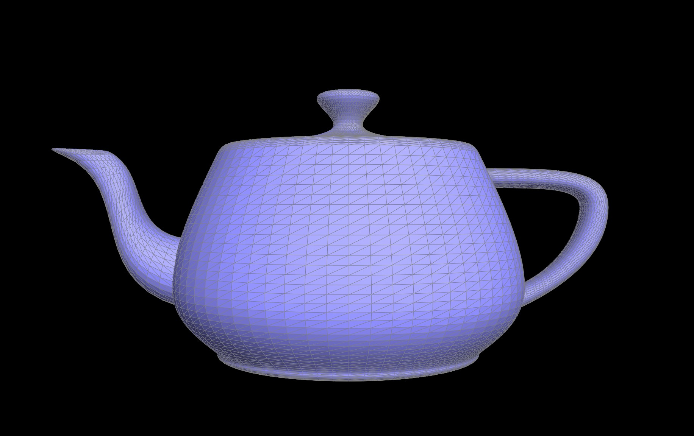

Overview
something about bezier de castalaisd algorithm
Overall, this was a fun project and we enjoyed learning about mesh editing and were surprised by how complex
it is just to display many meshes on our screens.
Section I: Bezier Curves and Surfaces
Task 1: Bezier Curves with 1D de Casteljau Subdivision
We implemented de Casteljau's algorithm for Bezier curves by recursively solving for the control points of
the curve at each subdivision level. We then used the control points to draw the curve. At each recursion step, we
lerp'ed between every two points in the current points vector to get the new control points until there was only
one point left. The lerp function is as follows, where /(t/) is the tuning parameter, a and b are the two points
to
lerp between.
$$lerp(t, a, b) = a + t * (b - a)$$
 Progression of recursive control point calculations
Progression of recursive control point calculations
 Evaluated point moving along Bezier curve
Evaluated point moving along Bezier curve
Dragging control point
Task 2: Bezier Surfaces with Separable 1D de Casteljau
We now extend the de Castelijau algorithm from evaluating Bezier curves to evaluating Bezier surfaces. The
algorithm was changed from performing lerps with control points in the 2D space to the 3D space. The logic of the
algorithm mostly remains the same.

The teapot with Bezier surfaces
Section II: Triangle Meshes and Half-Edge Data Structure
Task 3: Area-Weighted Vertex Normals
We implemented area-weighted vertex normals for Phong shading, improving on smoothness of surfaces from the flat
shading method. To achieve this, we first used the halfedge data structure to traverse the neighbor vertices of a
center vertex. Two edges were found through the difference between the center vertex and two neighbor vertices.
Then we
used the cross product of the two edges to calculate each normal, and summed up all the normals. Lastly we
returned the approximate unit normal at that vertex to obtain Phong shading.
Flat shaded teapot
Phong shaded teapot
Task 4: Edge Flip
We have a thorough edge flip implementation that can use used to flip any edge in the mesh. We first assign
variable names to all the halfedges, edges, vertices, and faces in the given configuration. Then we reassign all
properties to the halfedges using the Halfedge::setNeighbors(...) function. After that we keep
reassigning all the other edges, vertices, and faces to have the correct correspopnding halfedge.
An interesting but frustrating problem we had was that the UI window was freezing up due to coding error when an
edge flip was attempted, so it was hard to debug through the UI. However, finally when the UI stopped freezing all
was working well. Seeing the frozen window led us to being safe and setting every variable, even if it might not
have been all needed, to make sure no holes were found. Another mistake was wrongly assuming that some halfedges
belonged in the two faces shown in the diagram, as well as wrongly assuming the next halfedge properties for some
halfedges. This was realized thanks to browsing a comment on Piazza.
 Helpful edge flip diagram
Helpful edge flip diagram
Task 5: Edge Split
Pixel sampling is mapping pixels from one image to another (can be differing sizes).
We implemented pixel sampling for texture mapping by taking the color at the (u, v)
coordinate in our texture map and mapping it to the (x, y) coordinate in our screen space.
The two sampling methods we implemented are nearest sampling and bilinear sampling.
Nearest sampling simply outputs the color of the nearest pixel. This is done by rounding the (u, v) coordinate.
Bilinear sampling takes the 4 nearest sample locations and returns a weighted average color based on location.
This is
done through linear interpolation vertically, horizontally, and finally between the previous results.
 Nearest Sampling, 1 Sample Per Pixel
Nearest Sampling, 1 Sample Per Pixel
|
 Nearest Sampling, 16 Samples Per Pixel
Nearest Sampling, 16 Samples Per Pixel
|
 Bilinear Sampling, 1 Sample Per Pixel
Bilinear Sampling, 1 Sample Per Pixel
|
 Bilinear Sampling, 16 Samples Per Pixel
Bilinear Sampling, 16 Samples Per Pixel
|
We observed some differences between the two sampling methods. Bilinear sampling tends to give a blurrier result
due to averaging out values, which we can see in the images above. Nearest sampling only clips to the closest
color for a pixel result, which results in sharper edges in the images, but also more jaggies. In terms of
computation, bilinear will be more costly. This is especially true when computing images of large dimension for
bilinear sampling, since we are sampling four times as many locations, and also performing three lerps to obtain a
weighted average final result.
On images with lower resolution, there will be large differences since nearest ignores surrounding pixels with an
already low sample size.
On images with larger resolutions, these differences are less noticeable since averages become less useful with
larger sample sizes.
Task 6: Loop Subdivision for Mesh Upsampling
A mipmap is a data structure containing images in which each is a lower resolution (usually ½ the height and
width) of the previous image. In this application, we store a texture in our mipmap. Level sampling is simply
sampling from a “level” of a mipmap. As discussed in lecture we can choose a good
mipmap level with the following formula.
$$L = max(\sqrt{(\frac {du}{dx})^2 + \frac{dv}{dx})^2}, \sqrt{(\frac {du}{dy})^2 + \frac{dv}{dy})^2})$$
$$D = \log_2(L)$$
Our implementation allows us to sample from level 0, the nearest level found by the formula, and a
weighted average of adjacent levels found by the formula.
 L_ZERO and P_NEAREST
L_ZERO and P_NEAREST
|
 L_ZERO and P_LINEAR
L_ZERO and P_LINEAR
|
 L_NEAREST and P_NEAREST
L_NEAREST and P_NEAREST
|
 L_NEAREST and P_LINEAR
L_NEAREST and P_LINEAR
|